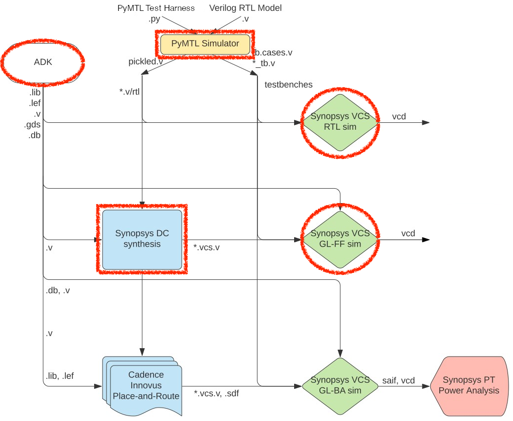

ECE 6745 Section 1: ASIC Front-End Flow
In this section, we will be discussing the front-end of the ASIC toolflow. More detailed tutorials will be posted on the public course website, but this section will at least give you a chance to edit some RTL, synthesize that to a gate-level netlist, and then simulate that gate-level netlist. The following diagram illustrates the tool flow we will be using in ECE 6745. Notice that the Synopsys and Cadence ASIC tools all require various views from the standard-cell library which part of the ASIC design kit (ADK).

The "front-end" of the flow is highlighted in red and refers to the PyMTL simulator, Synopsys DC, and Synopsys VCS:
- We write our RTL models in Verilog, and we use the PyMTL framework to test, verify, and evaluate the execution time (in cycles) of our design. This part of the flow is very similar to the flow used in ECE
-
Once we are sure our design is working correctly, we can then start to push the design through the flow.
-
We use Synopsys VCS for RTL and gate-level simulation. PyMTL uses the Verilator two-state RTL simulator meaning every wire will be either a 0 (logic low) or 1 (logic high). Synopsys VCS uses four-state RTL simulation meaning every wire will be either a 0 (logic low), 1 (logic high), X (unknown), or Z (floating). Four-state RTL simulation can identify different kinds of bugs than two-state simulation such as bugs due to uninitialized state. Gate-level simulation involves simulating every standard-cell gate and helps verify that the Verilog gate-level netlist is functionally correct.
-
We use Synopsys Design Compiler (DC) to synthesize our design, which means to transform the Verilog RTL model into a Verilog gate-level netlist where all of the gates are selected from the standard-cell library. We need to provide Synopsys DC with abstract logical and timing views of the standard-cell library in
.dbformat. In addition to the Verilog gate-level netlist, Synopsys DC can also generate a.ddcfile which contains information about the gate-level netlist and timing, and this.ddcfile can be inspected using Synopsys Design Vision (DV).
Extensive documentation is provided by Synopsys and Cadence. We have organized this documentation and made it available to you on the Canvas course page:
The first step is to access ecelinux. Use Microsoft Remote Desktop to
log into a specific ecelinux server. Then use VS Code to log into the
same specific ecelinux server. Once you are at the ecelinux prompt,
source the setup script, source the GUI setup script, clone this
repository from GitHub, and define an environment variable to keep track
of the top directory for the project.
% source setup-ece6745.sh
% source setup-gui.sh
% mkdir -p $HOME/ece6745
% cd $HOME/ece6745
% git clone https://github.com/cornell-ece6745/ece6745-sec01-asic-front-end sec01
% cd sec01
% TOPDIR=$PWD
1. NanGate 45nm Standard-Cell Libraries
A standard-cell library is a collection of combinational and sequential
logic gates that adhere to a standardized set of logical, electrical, and
physical policies. For example, all standard cells are usually the same
height, include pins that align to a predetermined vertical and
horizontal grid, include power/ground rails and nwells in predetermined
locations, and support a predetermined number of drive strengths. In this
course, we will be using the a NanGate 45nm standard-cell library. It is
based on a "fake" 45nm technology. This means you cannot actually tapeout
a design using this standard cell library, but the technology is
representative enough to provide reasonable area, energy, and timing
estimates for teaching purposes. All of the files associated with this
standard cell library are located in the ${ECE6745_STDCELLS} directory.
Let's first look at the data book which is on the Canvas course page:
Scroll through the PDF and find the entry for the NAND3_X1 cell (it is on page 104). The data book provides information on the standard cell's logic function, delay, area, and power consumption. Let's take a look at the layout for the same cell. Note that since Klayout is a Linux GUI application you will need to use Microsoft Remote Desktop.
Find the NAND3_X1 cell in the left-hand cell list, and then choose Display > Show as New Top from the menu. We will learn more about layout and how this layout corresponds to a static CMOS circuit later in the course. The key point is that the layout for the standard cells are the basic building blocks that we will be using to create our ASIC chips.
The Synopsys and Cadence tools do not actually use this layout directly; it is actually too detailed. Instead these tools use abstract views of the standard cells, which capture logical functionality, timing, geometry, and power usage at a much higher level. Let's look at the Verilog behavioral specification for the 3-input NAND cell.
Note that the Verilog implementation of the 3-input NAND cell looks
nothing like the Verilog we used in ECE 4750. This cell is implemented
using three Verilog primitive gates (i.e., two and gates and one not
gate), and it includes a specify block which is used for advanced
gate-level simulation with back-annotated delays.
Finally, let's look at an abstract view of the timing and power of the
3-input NAND cell suitable for use by the ASIC flow. This abstract view
is in the .lib file for the standard cell library.
Now that we have looked at some of the views of the standard cell library, we can now try using these views and the ASIC flow front-end to synthesize RTL into a gate-level netlist.
2. PyMTL-Based Testing, Simulation, Translation
Our goal in this section is to generate a gate-level netlist for the following four-stage registered incrementer:

We will take an incremental design approach. We will start by implementing and testing a single registered incrementer, and then we will write a generic multi-stage registered incrementer. For this section (and indeed the entire course) you will use Verilog for RTL design and Python for test harnesses, simulation drivers, function-level models, and cycle-level models.
2.1. Implement and Test a Registered Incrementer
Now let's run all of the tests for the registered incrementer:
The tests will fail because we need to finish the implementation. Let's start by focusing on the basic registered incrementer module.
Use VS Code to open the implementation and uncomment the actual combinational logic for the increment operation. The Verilog RTL implementation should look as follows:
`ifndef TUT3_VERILOG_REGINCR_REG_INCR_V
`define TUT3_VERILOG_REGINCR_REG_INCR_V
module tut3_verilog_regincr_RegIncr
(
input logic clk,
input logic reset,
input logic [7:0] in_,
output logic [7:0] out
);
// Sequential logic
logic [7:0] reg_out;
always @( posedge clk ) begin
if ( reset )
reg_out <= 0;
else
reg_out <= in_;
end
// Combinational logic
logic [7:0] temp_wire;
always @(*) begin
temp_wire = reg_out + 1;
end
// Combinational logic
assign out = temp_wire;
// Line tracing
`ifndef SYNTHESIS
logic [`VC_TRACE_NBITS-1:0] str;
`VC_TRACE_BEGIN
begin
$sformat( str, "%x (%x) %x", in_, reg_out, out );
vc_trace.append_str( trace_str, str );
end
`VC_TRACE_END
`endif /* SYNTHESIS */
endmodule
`endif /* TUT3_VERILOG_REGINCR_REG_INCR_V */
If you have an error you can use a trace-back to get a more detailed error message:
Once you have finished the implementation let's rerun the tests:
The -v command line option tells pytest to be more verbose in its
output and the -s command line option tells pytest to print out the
line tracing. Make sure you understand the line tracing output. You can
also dump VCD files using --dump-vcd for waveform debugging with
Surfer.
% cd $TOPDIR/sim/build
% pytest ../tut3_verilog/regincr/test/RegIncr_test.py -sv --dump-vcd
% code regincr.test.RegIncr_test__test_small_top.verilator1.vcd
You can also use GTKWave if you prefer to view waveforms, but since GTKWave is a Linux GUI application you will need to use Microsoft Remote Desktop. PyMTL takes care of including all Verilog dependencies into a single Verilog file (also called "pickling") suitable for use with the ASIC flow. Take a look at the generated pickled Verilog file.
2.2. Test the Multi-Stage Registered Incrementer
Now let's work on composing a single registered incrementer into a multi-stage registered incrementer. We will be using static elaboration to make the multi-stage registered incrementer generic. In other words, our design will be parameterized by the number of stages so we can easily generate a pipeline with one stage, two stages, four stages, etc.
Use VS Code to open the implementation and look at the static elaboration logic to instantiate a pipeline of registered incrementers. The Verilog RTL implementation looks as follows:
`ifndef TUT3_VERILOG_REGINCR_REG_INCR_NSTAGE_V
`define TUT3_VERILOG_REGINCR_REG_INCR_NSTAGE_V
`include "tut3_verilog/regincr/RegIncr.v"
module tut3_verilog_regincr_RegIncrNstage
#(
parameter nstages = 2
)(
input logic clk,
input logic reset,
input logic [7:0] in_,
output logic [7:0] out
);
// This defines an _array_ of signals. There are p_nstages+1 signals
// and each signal is 8 bits wide. We will use this array of
// signals to hold the output of each registered incrementer stage.
logic [7:0] reg_incr_out [nstages+1];
// Connect the input port of the module to the first signal in the
// reg_incr_out signal array.
assign reg_incr_out[0] = in_;
// Instantiate the registered incrementers and make the connections
// between them using a generate block.
genvar i;
generate
for ( i = 0; i < nstages; i = i + 1 ) begin: gen
tut3_verilog_regincr_RegIncr reg_incr
(
.clk (clk),
.reset (reset),
.in_ (reg_incr_out[i]),
.out (reg_incr_out[i+1])
);
end
endgenerate
// Connect the last signal in the reg_incr_out signal array to the
// output port of the module.
assign out = reg_incr_out[nstages];
endmodule
`endif /* TUT3_VERILOG_REGINCR_REG_INCR_NSTAGE_V */
Before running the tests, let's take a look at how we are doing the
testing in the corresponding test script. Use VS Code to open up
RegIncrNstage_test.py. Notice how PyMTL enables sophisticated testing
for highly parameterized components. The test script includes directed
tests for two and three stage pipelines with various small, large, and
random values, and also includes random testing with 1, 2, 3, 4, 5, 6
stages. Writing a similar test harness in Verilog would likely require
10x more code and be significantly more tedious!
Let's run all of the tests for the multi-stage registered incrementer.
2.3. Interactive Simulator for Multi-Stage Registered Incrementer
Test scripts are great for verification, but when we want to push a
design through the flow we usually want to use an interactive simulator
to drive that process. An interactive simulator is meant for evaluting
the area, energy, and performance of a design as opposed to verification.
We have included a simple interactive simulator called regincr-sim
which takes a list of values on the command line and sends these values
through the pipeline. Let's see the simulator in action:
The simulator will generate the pickled Verilog file we want to push through the ASIC front-end flow.
Notice how PyMTL3 has generated a wrapper which picks a specific parameter value for this instance of the multi-stage registered incrementer. The interactive simulator will also generate pure-Verilog test bench with associated test cases which we can use to run four-state RTL and gate-level simulation.
3. Synopsys VCS for 4-State RTL Simulation
Recall that PyMTL3 simulation of Verilog RTL uses Verilator which is a
two-state simulator. To help catch bugs due to uninitialized state (and
also just to help verify the design using another Verilog simulator), we
can use Synopsys VCS for four-state RTL simulation. This simulator will
make use of the Verilog test-bench generated by the --test-verilog and
--dump-vtb options from earlier (although we could also write our own
Verilog test-bench from scratch). Here is how to run VCS for RTL
simulation:
% mkdir -p $TOPDIR/asic/build-regincr/01-synopsys-vcs-rtlsim
% cd $TOPDIR/asic/build-regincr/01-synopsys-vcs-rtlsim
% vcs -sverilog -xprop=tmerge -override_timescale=1ns/1ps -top Top \
+vcs+dumpvars+waves.vcd \
+incdir+${TOPDIR}/sim/build \
${TOPDIR}/sim/build/RegIncr4stage__pickled.v \
${TOPDIR}/sim/build/RegIncr4stage_basic_tb.v
You should see a simv binary which is the compiled RTL simulator which
you can run like this:
It should pass the test. Now let's look at the resulting waveforms with Surfer.
You can also use GTKWave if you prefer to view waveforms, but since GTKWave is a Linux GUI application you will need to use Microsoft Remote Desktop. Browse the signal hierarchy and view the waveforms for one of the four registered incrementers. Note how the signals are initialized to X and only become 0 or 1 after a few cycles once we come out of reset. If we improperly used an initialized value then we would see X-propagation which would hopefully cause a failing test case.
4. Synopsys Design Compiler for Synthesis
We use Synopsys Design Compiler (DC) to synthesize Verilog RTL models into a gate-level netlist where all of the gates are from the standard cell library. So Synopsys DC will synthesize the Verilog + operator into a specific arithmetic block at the gate-level. Based on various constraints it may synthesize a ripple-carry adder, a carry-look-ahead adder, or even more advanced parallel-prefix adders.
We start by creating a subdirectory for our work, and then launching Synopsys DC.
% mkdir -p $TOPDIR/asic/build-regincr/02-synopsys-dc-synth
% cd $TOPDIR/asic/build-regincr/02-synopsys-dc-synth
% dc_shell-xg-t
4.1. Initial Setup
We need to set two variables before starting to work in Synopsys DC.
These variables tell Synopsys DC the location of the standard cell
library .db file which is just a binary version of the .lib file we
saw earlier.
dc_shell> set_app_var target_library "$env(ECE6745_STDCELLS)/stdcells.db"
dc_shell> set_app_var link_library "* $env(ECE6745_STDCELLS)/stdcells.db"
4.2. Analyze and Elaborate the Design
We are now ready to read in the Verilog file which contains the top-level design and all referenced modules. We do this with two commands. The analyze command reads the Verilog RTL into an intermediate internal representation. The elaborate command recursively resolves all of the module references starting from the top-level module, and also infers various registers and/or advanced data-path components.
dc_shell> analyze -format sverilog ../../../sim/build/RegIncr4stage__pickled.v
dc_shell> elaborate RegIncr4stage
4.3. Create Timing Constraints
We now need to create a clock constraint to tell Synopsys DC what our target cycle time is:
4.4. Synthesize the Design
Finaly, the compile comamnd will do the actual logic synthesis:
4.5. Write Final Outputs and Reports
We write the output to a .ddc file which we can use with Synopsys DV
and a Verilog gate-level netlist.
dc_shell> write -format ddc -hierarchy -output post-synth.ddc
dc_shell> write -format verilog -hierarchy -output post-synth.v
We can also generate usful reports about area and timing. Prof. Batten will spend some time explaining these reports:
Make some notes about what you find. Note the total cell area used in this design. Finally, we go ahead and exit Synopsys DC.
Take a few minutes to examine the resulting Verilog gate-level netlist. Notice that the module hierarchy is preserved.
Take a close look at the implementation of the incrementer. What kind of standard cells has the synthesis tool chosen? What kind of adder microarchitecture?
4.6. Synopsys Design Vision
We can use the Synopsys Design Vision (DV) tool for browsing the
resulting gate-level netlist, plotting critical path histograms, and
generally analyzing our design. Start Synopsys DV and setup the
target_library and link_library variables as before. Note that since
Synsopsy DV is a Linux GUI application you will need to use Microsoft
Remote Desktop.
% design_vision-xg
design_vision> set_app_var target_library "$env(ECE6745_STDCELLS)/stdcells.db"
design_vision> set_app_var link_library "* $env(ECE6745_STDCELLS)/stdcells.db"
You can use the following steps to open the .ddc file generated during
synthesis.
- Choose File > Read from the menu
- Open the
post-synth.dccfile
You can use the following steps to view the gate-level schematic for the design.:
- Select the
RegIncr4stagemodule in the Logical Hierarchy panel - Choose Select > Cells > Leaf Cells of Selected Cells from the menu
- Choose Schematic > New Schematic View from the menu
- Choose Select > Clear from the menu
You can use the Logical Hierarchy browser to highlight modules in the
schematic view. If you click on the drop down you can choose Cells
(All) instead of Cells (Hierarchical) to browse the standard cells as
well. You can determine the type of module or gate by selecting the
module or gate and choosing Edit > Properties from the menu. Then look
for ref_name. You should be able to see the schematic for eaech stage
of the pipline including the flip-flops and and the add module. See if
you can figure out why the synthesis tool has inserted AND gates in front
of each flip-flop. If you look inside the add module you should be able
to see the adder microarchitecture.
You can use the following steps to view a histogram of path slack, and also to open a gave-level schematic of just the critical path.
- Choose Timing > Path Slack from the menu
- Click OK in the pop-up window
- Select the left-most bar in the histogram to see list of most critical paths
- Select one of the paths in the path list to highlight the path in the schematic view
5. Synopsys VCS for Fast-Functional Gate-Level Simulation
Good ASIC designers are always paranoid and never trust their tools. How do we know that the synthesized gate-level netlist is correct? One way we can check is to rerun our test suite on the gate-level model. We can do this using Synopsys VCS for fast-functional gatel-level simulation. Fast-functional refers to the fact that this simulation will not take account any of the gate delays. All gates will take zero time and all signals will still change on the rising clock edge just like in RTL simulation. Here is how to run VCS for RTL simulation.
% mkdir -p $TOPDIR/asic/build-regincr/03-synopsys-vcs-ffglsim
% cd $TOPDIR/asic/build-regincr/03-synopsys-vcs-ffglsim
% vcs -sverilog -xprop=tmerge -override_timescale=1ns/1ps -top Top\
+delay_mode_zero \
+vcs+dumpvars+waves.vcd \
+incdir+${TOPDIR}/sim/build \
${ECE6745_STDCELLS}/stdcells.v \
../02-synopsys-dc-synth/post-synth.v \
${TOPDIR}/sim/build/RegIncr4stage_basic_tb.v
The key difference from four-state RTL simulation is that this simulation
takes as input the Verilog for the standard-cell library and the Verilog
for the post-synthesis gate-level netlist. You should see a simv binary
which is the compiled RTL simulator which you can run as follows.
It should pass the test. Now let's look at the resulting waveforms using Surfer.
You can also use GTKWave if you prefer to view waveforms, but since GTKWave is a Linux GUI application you will need to use Microsoft Remote Desktop. Browse the signal hierarchy and display all the waveforms for a subset of the gate-level netlist using these steps:
- Expand out the Scopes panel until you find an add module
- Click on the _add_module
- Click the + button in the Variables panel
Notice how we can see all of the single-bit signals corresponding to each gate in the gate-level netlist, and how these signals all change without any delays.